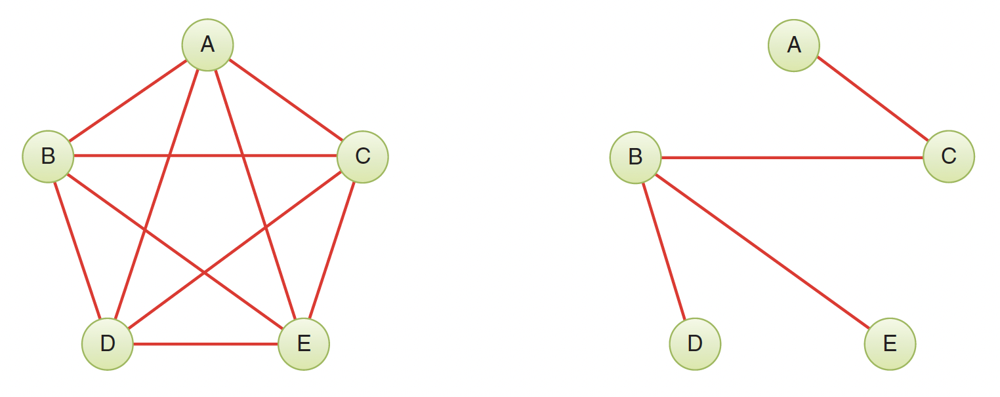
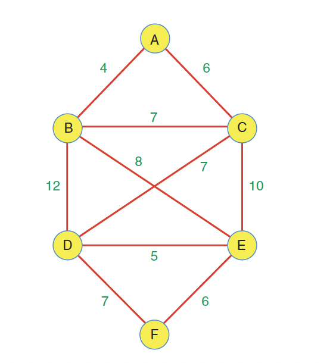
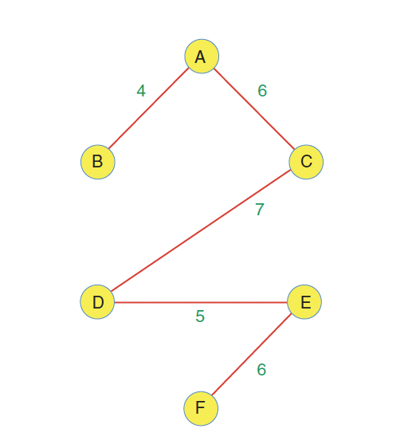
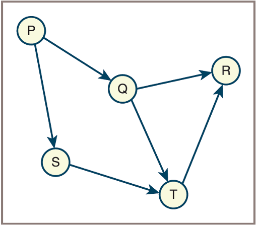
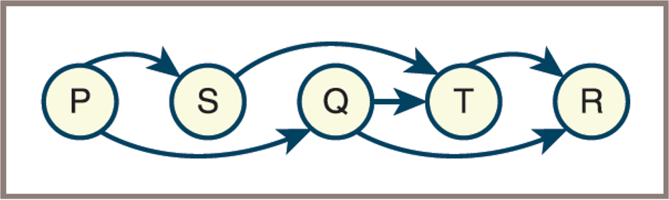
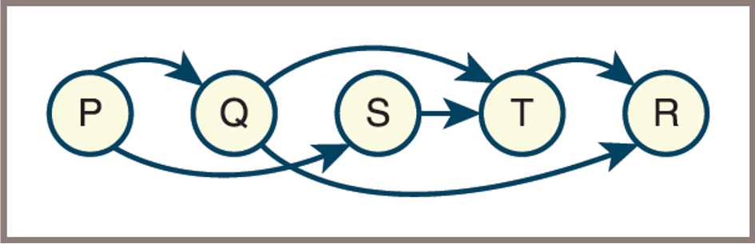

2026-04-13
Be encouraged despite the challenges!It is SSRD Day!traverseFromVertex shown in the Psedocode, it implicitly yields a tree rooted at the vertex from which the traversal starts and includes all the vertices reached during the traversaldfs has just been called using vertex v:
w now occurs, you can consider w to be a child of v The edge (v , w) corresponds to the parent-child relationship, or edge, between v and wdepth-first search tree
10, for a five-vertex graph.4.minimum spanning tree (MST) for the graph.algorithm for finding a minimum spanning treeHere is a weighted graph with six vertices. Each edge has a weight, shown by a number alongside the edge.

How can you pick a subgraph that minimizes the cost of connecting vertices into a network?
The MST for the graph above

The minimum spanning tree consists of the edges AB, AC, CD, DE, and EF, for a total edge weight of 28
The order in which the edges are specified is unimportant.
Math 101 → Math 201 (Math 101 is a prerequisite for Math 201)CS 101 → CS 201 (CS 101 is a prerequisite for CS 201)CS 201 → CS 301Math 201 → CS 301
The first topological ordering of the graph

The second topological ordering of the graph

Question 1: A connected graph has 8 vertices. How many edges must its spanning tree have? Why?
Question 2: True or False? A graph can have multiple different spanning trees. If true, provide an example scenario.
Question 3: Can a disconnected graph have a spanning tree? Explain your reasoning.
Given the following weighted graph, apply Prim’s Algorithm starting from vertex A:
A ---5--- B
| \ |
| \ |
3 7 6
| \ |
C ---4--- D ---2--- E
| |
8 1
| |
F ------------Tasks: 1. List the order in which edges are added to the MST 2. What is the total weight of the MST? 3. Draw the resulting MST
Question 1: What is the key difference between Kruskal’s and Prim’s algorithm approaches?
Question 2: Both algorithms have the same time complexity. What is it, and what do E and V represent?
Question 3: When would you prefer Kruskal’s over Prim’s algorithm (or vice versa)?
Given the following course prerequisite graph:
Tasks: 1. Draw the directed graph representing these dependencies 2. Provide at least TWO valid topological orderings 3. Explain why CS 301 cannot come before CS 201 in any valid ordering
Question 1: Can a graph with a cycle have a valid topological sort? Why or why not?
Question 2: Consider these course dependencies: - Course A requires Course B - Course B requires Course C
- Course C requires Course A
What problem exists here? How would you detect this programmatically?
Scenario: You are designing a network to connect 5 cities with fiber optic cables. The cost (in millions) to connect each pair of cities is:
Tasks: 1. Which algorithm would you use to minimize total cost? Why? 2. Find the minimum cost to connect all cities 3. Which connections should be built? 4. What is the total cost of your solution?
Given an undirected graph with vertices {A, B, C, D, E, F} and edges: - A-B, A-C, B-D, B-E, C-F, D-E, E-F
Question: If you perform DFS starting from vertex A and always visit neighbors in alphabetical order, draw the resulting DFS tree. Which edges from the original graph are NOT in the DFS tree?